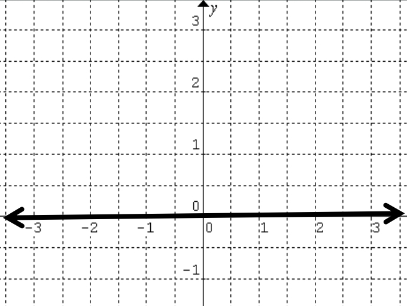
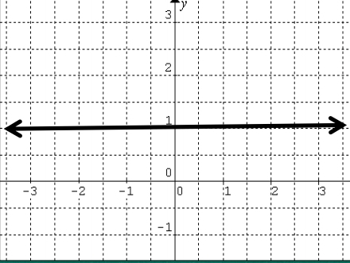
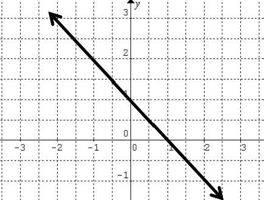
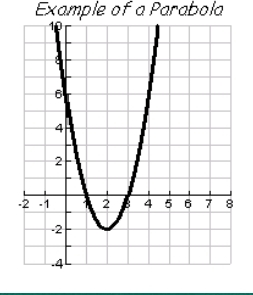
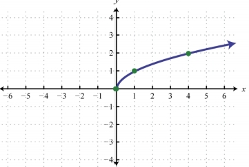
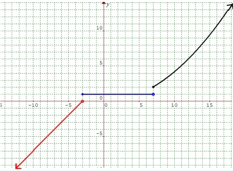
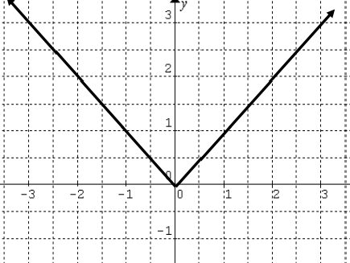
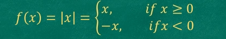
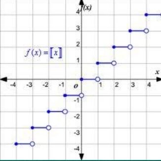

ZERO FUNCTION

The zero function is the
function given by the
equation
Domain: ℝ
Range: {0}
CONSTANT FUNCTION

The graph above is an example
of a constant
Domain: ℝ
LINEAR FUNCTION

A linear function is a function QUADRATIC FUNCTION

Domain: ℝ
Range:
RADICAL FUNCTION

SPLIT OR PIECEWISE-DEFINDED FUNCTION
A split or piecewise-defined
One example of piecewise-defined 
ABSOLUTE VALUE FUNCTION

An absolute value function is a
function that contains an
algebraic expression within an
absolute value symbols.
The graph of the simplest
absolute value function,
f(x)=|x| is shown on the right.
This function is defined by the
split function below:

GREATEST INTEGER FUNCTION

A greatest integer function is the function
whose values are denoted by ۥۤ𝒙 . That is,
the greatest integer less than or equal to 𝒙.
f(x)=[x]
ۥ Note:ۤx = n if n ≤ x < n + 1
A constant function is the
function given by the
equation
f(x)=1
Note:a is a non zero
function, where the value of a is 1.Hence,
the equation of the function is…
f(x)=1
Range: {a}
whose equation is of the form
f(x)=mx+b
where m(≠0) and b are
constants.
The graph above is an example of a linear
function, where the slope is equal to -1 and
the y-intercept is 1. Hence, the equation of
the function is…
f(x)=-x+1
m – slope, b – y-intercept
Domain:ℝ
Range:ℝ
A quadratic function has the form
f(x) = ax² + bx + c
where a (≠ 0), b, and c are
constants.
The vertex form of the quadratic function is given by:
f(x)=a(x-h)²+k
where (h,k) is the coordinates of the vertex.
The graph of a quadratic function is a
parabola.
• if a > 0, the parabola opens upward
• if a < 0, the parabola opens
downward
• if a > 0, the range is [𝐤, +∞)
• if a < 0, the range is (−∞, 𝒌]
A radical function is a function that is
defined by a radical expression.
A function can only be a radical
function if the independent variable
x is inside the radical sign.
Most of the examples of radical
functions have an index of 2
(square
root), but an index of 3 (cube root)
or greater is also possible.
The graph of the simplest radical
function, f(x)=√x is shown below.
To find the domain of a radical function,
• If the index is even, the domain is all
possible values of x that will make the
radicand greater than or equal to ZERO.
• If the index is odd, the domain is ALL
REAL NUMBERS
function is a function that is
defined using several
expressions for different parts
of the domain.
function is
the function on the right.
This function is defined by three several
expressions:
a linear expression,
a constant
and a quadratic expression in
different parts of
its domain.
BACK TO HOMEPAGE